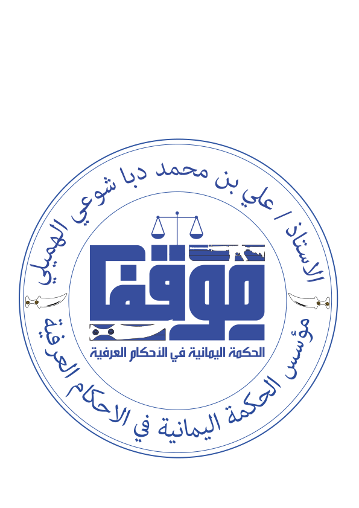

والصلاه والسلام على محمدآ سيد المرسلين . اللهم صلي عليه وعلى اله وسلم .
اخوننا واعضائنا وزوارنا الافاضل الاكارم مرحبا بكم اليوم في منصتنا
التي لطالما عملنا عليها جاهدين لاخراجها لكم بأفضل صورة ممكنة
جعلها الله في ميزان اعمالنا وجعلها بركه لنا وعلينا ولكم وفائدة عضيمة
وانما اجتهدنا وعملنا ذلك لاجل تحقيق هدف واحد وهو
لاجل ترسيخ ونشر الثقافة العرفية القبلية بيننا جميعا كابناء
مجمتع واحد
فلا يخفا عليكم ماتمر به البلاد والعباد من ضروف حياتية واجتماعيه
قاسية وانخفاض مستمر في الامن والأمان وابسط الحقوق المعيشية
أيضا تدهور اجهزه الدوله بشكل عام بسبب الحرب واثارها على المجتمع
وهذا اكثر ما اجج لدينا ودفعنا لاقامة مثل هذه المنصه الذي بكم ترتقي
فبحكم ان اغلب الناس أصبحت تعود للموث الشعبي والاحكام العرفية
في حل الاشاكالات الخاصة والعامه والتجارية لجميع جوانب الحياه
ولاستغلال بعض المتحكمين والمشايخ ضروف الناس وضعف الاغلب
في الاحكام العرفية فاحببنا ان نطرح ذلك لنرتقي بجميع طبقات
المجتمع في موروثنا الشعبي القبلي مستخدمين كمرجع لنا
كتاب ( )
وكتاب ( )
جزا الله الشيخين عنا كل خير ولهما جزيل الثناء على ماقدمو لنا
اخوكم/ علي محمد الهميلي
#تطبيق_موقف
#الحكمة_اليمانية_في_الاحكام_العرفية
